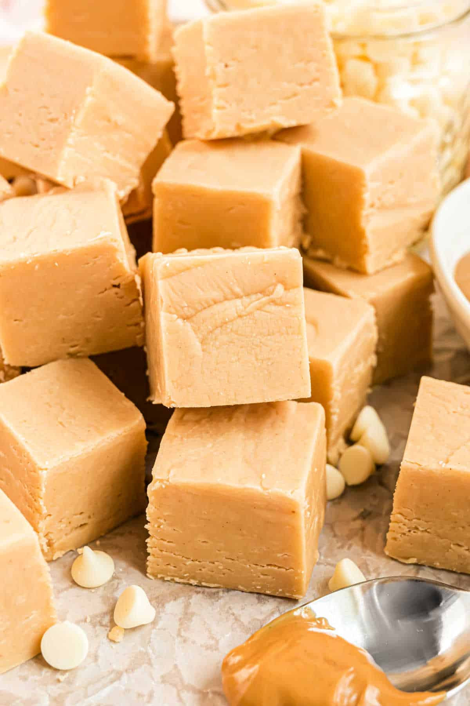

Peanut butter originated in Central and South America by the Inca and Aztec civilizations as early as 1500 B.C., where they ground roasted peanuts into a thick paste. It was then developed further in the late 19th century by inventors in the United States and Canada. Now, we have things like PB\&J sandwiches, peanut butter cookies, and even peanut butter fudge!
Peanut butter fudge is a delicious treat that can be served year round. It is a quick dessert, only taking about 30 minutes for prep and and five ingredients. Keep reading to make your own!
